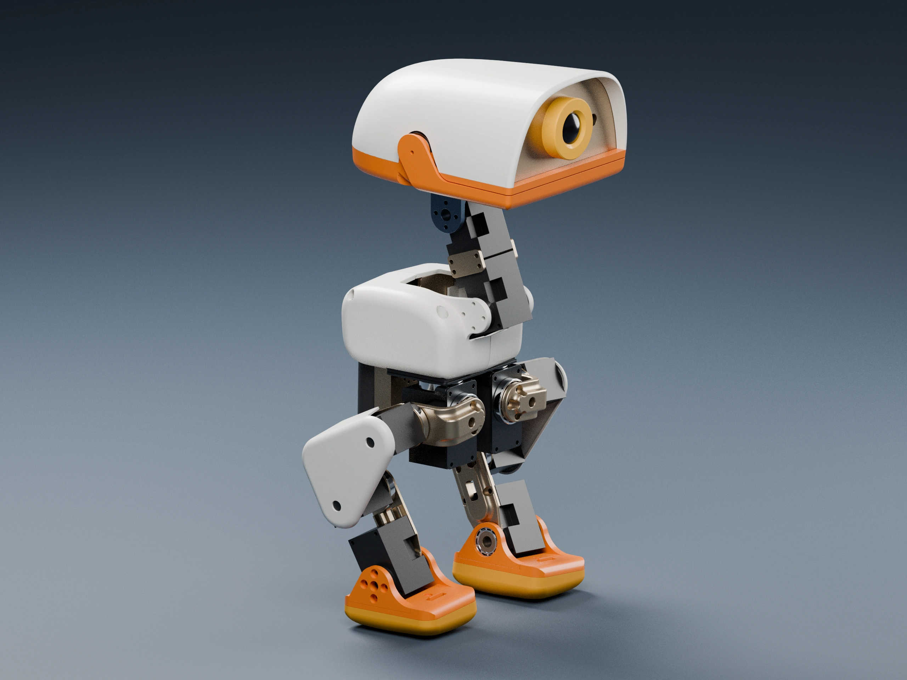

SELF-PACED WORKSHOP
认识 Microduck 的机械结构
先把外壳、关节、执行器和传感器分开理解，再看它们如何组成一台可控制的机器人。
从整体到组件
Microduck 是一台小型双足机器人：双腿承担支撑与移动，颈部机构负责调整视线，机身则容纳计算、电源和连接部件。视觉网格用于呈现外观，关节与碰撞模型用于规定可发生的运动和接触，二者在仿真中承担不同职责。

拖动旋转，滚轮或双指缩放；移动滑块可逐步展开结构。
操作时，先把爆炸滑块移到中间位置，通过可点击标签找到左右腿的舵机；再把滑块移到最右端，依次点击头部镜头、外壳和主板的标签。最后复位滑块，观察各部件如何借助连接件组成运动链。
从机械结构到关节控制
本章要解决一个基础问题：策略输出的 14 个数字，怎样变成可见的机器人动作？先在模型中找到躯干、左右腿和头部，再沿“躯干 → 髋关节 → 膝关节 → 踝关节 → 脚”观察连接关系。这样，后面遇到关节顺序、坐标变换或脚部接触问题时，就能找到它们在实体结构中的对应位置。
描述一个零件的位置，还需要说明它相对于哪个坐标系。齐次变换矩阵统一表示旋转 R 和平移 t；沿机械链依次相乘，就能把脚坐标系中的点转换到躯干坐标系。这就是正向运动学：根据已知关节角度计算末端位置。
上标 B 表示躯干坐标系，下标 F 表示脚坐标系；每一项变换都来自零件的装配位置和关节转角。把相机安装在头上时，也需要沿颈部和头部的机械链计算相机朝向，不能把头部转动误认为整个身体转动。
M = mul(parent_M, M_rest)
J = mul(mul(tf(None, jpos), tf(axis_angle_rot(axis, q))),
tf(None, [-c for c in jpos]))
M = mul(M, J)M_rest 表示静态装配关系，axis 和 jpos 定义转轴，q 是关节角度。J 表示绕该转轴旋转，再与父部件的变换相乘。课程结构模型沿这条机械链放置 CAD 零件；展开滑块只改变展示位置，不改变实际的关节定义。
代码位置：artwork/cad_assembly.py。先阅读本节节选，再结合完整文件理解上下文。
验证方法：展开后分别点击膝关节舵机、躯干外壳和脚，辨认哪些部件用于驱动、哪些用于承载、哪些与地面接触。然后返回总览，沿一条腿说明力如何传回躯干。本章使用 CAD 几何与装配参数，不需要训练数据，也没有训练步骤。
先分清零件、关节和自由度
一支笔以笔尖为支点时可以朝多个方向转动，而铰链通常只能绕一条固定轴旋转，机器人关节也受到类似约束。自由度表示描述允许运动所需的独立变量数量，零件数量则表示装配体包含多少实体，两者并不相等。因此，网页中展示 70 个组件，并不意味着策略需要输出 70 个动作。
| 区域 | 活动关节 | 主要作用 |
|---|---|---|
| 每条腿 | 髋偏航、髋侧倾、髋俯仰、膝、踝，共 5 个 | 控制支撑与脚的位置 |
| 颈部与头部 | 颈俯仰、头俯仰、头偏航、头侧倾，共 4 个 | 改变相机朝向与头部姿态 |
| 喙部 | 实物有舵机；本课程策略不控制 | 仅用于 CAD 展示，不计入 14 维策略动作 |
点击髋部舵机的标签，观察输出轴及其附近的轴承。舵机控制主动转角，轴承支撑旋转部件，支架则连接相邻关节。材料、几何形状和装配间隙都会影响运动。网页模型保留了原 CAD 的细节，但没有模拟螺钉预紧、塑料弹性或线缆受力，因此只能帮助理解结构，不能替代制造图纸。
软件如何让部件运动
- 1策略输出动作
- 2转换关节目标
- 3执行器产生力矩
- 4物理更新状态
- 5传感器提供新观测
策略不会直接把机器人移动到指定位置，而是输出一组动作，再由动作接口转换成关节目标。执行器根据目标状态与实际状态之间的差异产生力矩；机器人最终如何运动，还会受到接触、重力、惯量和摩擦的共同影响。
本课程的控制循环频率为 50 Hz，物理步进频率为 200 Hz，因此每个策略动作会持续四个物理步。齿隙模型还会引入被动关节来描述传动间隙，但这些关节并不是额外的策略输出。
用坐标系描述运动
| 坐标系 | 课程中的对应内容 |
|---|---|
| 世界坐标系 | 场地、球门和机器人整体位置 |
| 身体坐标系 | 前进、侧移、转向指令以及球相对身体的位置 |
| 相机坐标系 | 图像射线与检测目标方向 |
| 关节局部坐标系 | 一个关节的旋转轴与角度 |
检查理解
头部关节保持不动时，相机画面一定稳定吗？
查看解析
不一定。机身可能发生俯仰和横滚，颈部也会随之运动。判断画面是否稳定，应观察相机相对于世界坐标系的姿态，不能只看头部关节角度。
练习：沿一条受力路径找部件
先让模型保持装配状态，找到左脚，并沿脚踝、小腿、膝部、大腿和髋部向上追踪。脚掌着地后，支撑力会沿这条路径传到机身。随后拖动爆炸滑块展开模型，点击关节附近的舵机和支架标签，辨认哪个部件固定在上一级、哪个部件随输出轴旋转。爆炸图只改变部件的显示位置，并不代表真实关节能够运动到这些位置。
舵机内部不仅有电机，还包括减速齿轮、位置反馈和控制电路。收到目标角度后，舵机需要一定时间进行跟踪，并受到可用扭矩、速度、摩擦和齿隙的限制。因此，“策略输出一个角度”不等于“关节立即到达该角度”。第二章将观察这一差别，第三章则说明策略如何适应它。
检查理解
在爆炸图中把脚部拉得更远，会改变仿真的腿长吗？
查看解析
不会。网页中的爆炸图只用于认识组件，仿真里的部件长度和关节连接仍由机器人描述文件定义。